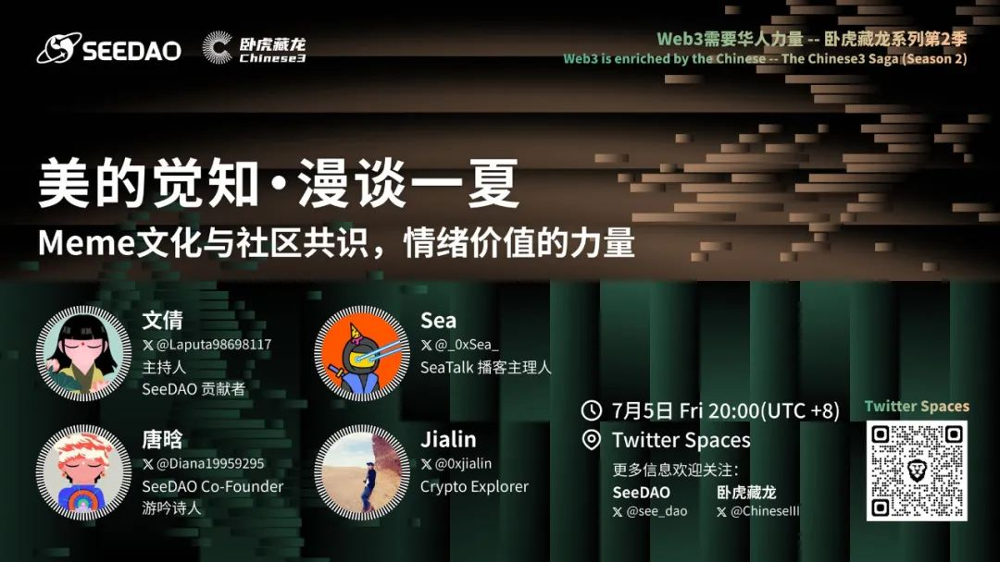
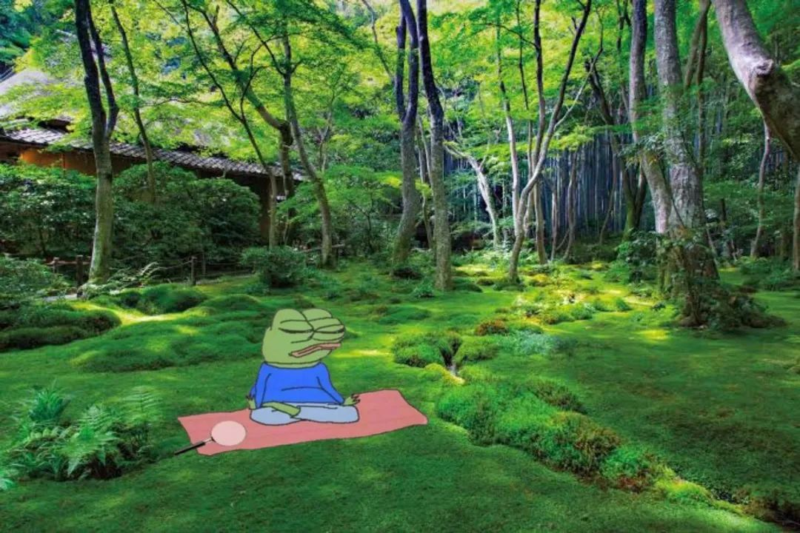

前言：
meme是每个时代的注脚，互联网社区一直是meme传播的核心阵地。
7月5日星期五 晚上八点
Twitter Space: x.com/ChineseIII
主持：
文倩 / meme专题策划与撰写
嘉宾：
Sea：做了十多年Web2产品经理和创业者后，一头扎进Web3兔子洞，SeaTalk播客主理人
唐晗：SeeDAO发起人，语言魔法师，游吟诗人；发起「蜉蝣」诗歌奖
Jialin : Crypto探索者，SeeDAO researcher

美的觉知·漫谈迷因文化与Meme的强大共识
文倩，公众号：The SeeDAO美的觉知·漫谈迷因文化与Meme的强大共识
(点击查看原文：直接预约AMA)